我们把FlashAttention-4 [1] 扩展出MXFP8的前向与反向，在LLM形状上做到前向2.85 PF/s、反向2 PF/s。
在Meta内部形状上，FA4 MX8前向是2.54 PF/s、反向1.58 PF/s，相对BF16分别最高提升1.6倍和1.52倍。我们还把量化融进上下游的生产者，做出一个端到端的零聚集不规则模块，让大部分激活和计算都留在FP8里，它已经在Meta内部用于GEM训练 [2]。据我们所知，这是最早一批在生产训练负载里跑MXFP8 FA4前后向的SoTA实现，代码已开源在Ads Model Kernel Library。
Blackwell的张量核心引入了块缩放MMA指令（tcgen05.mma.block_scale），原生支持微缩放格式MXFP8、MXFP6、MXFP4和NVFP4，吞吐是BF16 MMA的2到4倍 [4,5]。但要在真实训练负载里吃到这份红利，远不只是把注意力内核的数据类型换掉。缩放因子必须被管理在本来就已饱和的TMEM里；沿GEMM K维的量化，要对每一个操作数都做，包括P和dS这类在线算出来的中间量；而精度转换带来的开销还必须被重叠掉，MMA才能一直满速执行。
在这项工作里，我们把FA4注意力内核扩展成端到端支持MXFP8的前向和反向，并把它接进一个用于广告训练的交叉注意力模块，配上融合的生产者与输出尾声。主要贡献是：(1) TMEM分配策略，让缩放因子塞进已经被完全占满的512列TMEM，同时只新增最少的屏障；(2) 用Blackwell的redux.sync.max.abs.f32做warp级归约，对dS做在线、转置不变的方阵块缩放量化；(3) 融合的RMSNorm+量化 与GEMM+量化 内核，一趟产出带双份缩放因子布局的FP8输出，把量化开销消掉；(4) 一个零聚集的不规则模块，FP8数据留在未补齐的位置上，只有体积小得多的缩放因子被散射、补齐并重排到对张量核心友好、128对齐的地址供TMA读取。
注意力前向包含以下主要运算：
S = Q · Kᵀ
P = Softmax(S)
O = P · V
要启用块缩放MMA，我们沿用了Quack GEMM内核里现成的CuTe DSL示例和CUTLASS C++ 示例 [5,6]。我们用TMA把缩放因子从GMEM加载到SMEM，再在触发UMMA之前把它们从SMEM拷贝到TMEM。这里最主要的挑战是TMEM争用，后面会解释。
目前softmax warp里的计算用FP32，结果在PV乘法之前被转成BF16。我们则把P转成MXFP8，同时把缩放因子一起算出来。为了高效做到这一点所做的PTX优化，后面会深入讲。
有一个细节要注意：要让P·V的块缩放MMA成立，缩放因子必须沿MMA的K维计算。对Q和K来说，这一维是注意力的嵌入维度D；但对V来说，缩放和量化必须沿序列维度N做。
Blackwell架构的TMEM固定为512列，在现有的Blackwell FA内核里已经被MMA操作数和累加器完全占满，所以再塞进块缩放MMA的缩放因子就很棘手。
FA4前向在两个Q tile之间做乒乓式计算。我们加载两个Q tile，Q0和Q1，尺寸都是 [128, 128]，然后沿K/V tile（N维）循环。GEMM的顺序是：序言阶段做S0 = Q0 · K0和S1 = Q1 · K0；主循环里每个n依次是O0 = P0(n) · V(n)、S0 = Q0 · K(n+1)、O1 = P1(n) · V(n)、S1 = Q1 · K(n+1)；收尾阶段做O0 = P0(N) · V(N) 与O1 = P1(N) · V(N)。
这就是TMEM的分配：
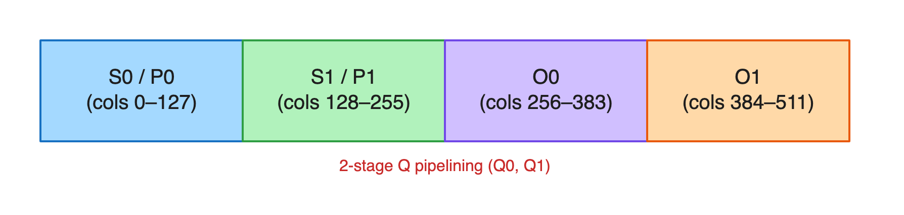
可以看到，TMEM被完全占满，没有多余空间留给SF。另外我们也无法把输入SF与累加器TMEM重叠。为了解决这个问题，我们按下面的方式重叠SF：
• 序言的S(i) GEMM可以用O(i) 放S(i) 的SF，因为O(i) 还没开始。
• O(i) 的SF可以和S(i) 重叠，这和常规FA把P(i) 与S(i) 重叠是同一套策略。因此已经存在一个屏障，能保证在拷贝O(i) 的SF之前S(i) 的TMEM已被消费。我们只需在S(i) 里挑一块与P(i) 不重叠的区域。注意对FP8来说P(i) 是32列，而S(i) 是F32、占128列。
• S(i) 的SF与S(1-i) 重叠。这需要在MMA和softmax两个warp之间再加一个屏障，因为MMA是异步执行的，S(1-i) 的累加器和S(i) 的SF之间可能出现写写冲突。因此我们在MMA warp里加一个屏障，在拷贝S(i) 的SF之前等待，并在S(1-i) 的累加器被softmax warp读完时到达。这个屏障通常不带来额外开销，因为总有一个O(i) GEMM可以覆盖屏障之前必须做的TMEM到寄存器的读取，而GEMM一般比这段读取更慢。
具体来说，带SF位置的GEMM执行顺序如下表：
| 阶段 | GEMM | SF的TMEM区域 |
|---|---|---|
| 序言 | S0 = Q0 · K0 | O0（空闲，尚未开始） |
| 序言 | S1 = Q1 · K0 | O1（空闲，尚未开始） |
| 主循环（n = 0 … N-1） | O0 = P0(n) · V(n) | S0（S已消费，P与之不重叠） |
| 主循环（n = 0 … N-1） | S0 = Q0 · K(n+1) | S1（新增屏障！） |
| 主循环（n = 0 … N-1） | O1 = P1(n) · V(n) | O0（沿用已有屏障） |
| 主循环（n = 0 … N-1） | S1 = Q1 · K(n+1) | S0（新增屏障！） |
| 收尾 | O0 = P0(N) · V(N) | 无（由O0自身占用） |
| 收尾 | O1 = P1(N) · V(N) | 无（由O1自身占用） |
随着我们走向更低精度，MMA吞吐上升（MXFP8是BF16的2倍，MXFP4是4倍），而softmax warp受SFU限制的计算量没有变。瓶颈因此发生转移：过去藏在慢速BF16 MMA后面的softmax气泡，现在暴露出来了。
在持久化内核里，tile边界尤其麻烦。不做unroll-KV时，一个tile的最后两个GEMM都是PV，紧接着是下一个tile的两个QK。下一个tile的Q0要等QK0完成才能开始softmax，而QK0又要等tile(n) 的所有PV GEMM结束。于是每个tile边界都会产生一个气泡。unroll-KV（受GDPA启发）[3] 把当前tile的最后一个PV与下一个tile的第一个QK交错起来：
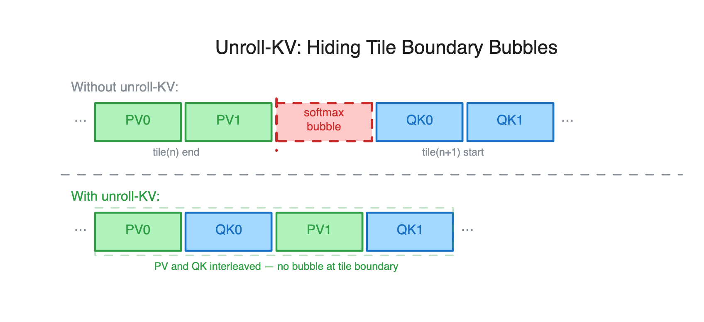
现在Q0的softmax提前一个GEMM触发，把tile边界的延迟藏到了PV流水线之后。
不过在BF16上启用它引发了一次性能回退：校正warp（它要顺序处理两个阶段）因为PV1被推后而延迟，再顺着softmax_corr_empty屏障级联到下一次softmax。我们的修法是把屏障等待移到行和计算之后（行和计算不依赖该屏障），让校正流水线脱离关键路径。
既然QK和PV两个GEMM都要用块缩放注意力，就必须把softmax之后的输出P从FP32在线转换成MXFP8，而不是BF16。施加块缩放是一个三步过程，对一个由32个元素组成的块x：
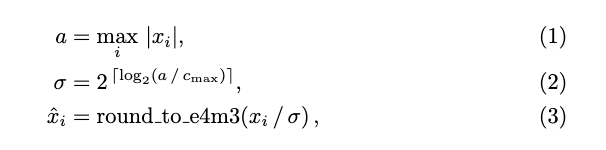
这里a是该块的amax（最大绝对值），sigma是缩放因子。为了在Blackwell上做到最优，第 (1) 步和第 (3) 步我们用了三指令max和fmul2指令（在CuteDSL的nvvm里暴露），这两步对每个元素都要执行。计算缩放因子（第2步）时，我们用了一段优化过的PTX序列，通过提取FP32的指数位和尾数位来避开log2和除法。
另外我们注意到，softmax的计算本来就要在指数运算前对这128个元素求行最大值。由于exp是单调递增函数，我们可以复用softmax已经算出的最大值，既不再增加额外的max运算，也只是每32个元素多一次exp。这个做法性能更好。
我们最近的实验表明，对P采用常数缩放还能进一步提升性能；考虑到softmax天然把输出限制在 [0, 1] 区间内，这在数值上也是稳健的。
处理不规则数据在广告模型里很重要，但在MXFP8下尤其棘手。Blackwell的块缩放MMA使用一个经过swizzle的512字节缩放因子原子（atom），对应128×128数据tile的缩放因子 [5]。不规则序列长度是任意的、常常不是128的倍数，它们的自然偏移不满足这个布局要求。把整个数据张量补齐也能work，但会带来昂贵的内存流量和存储开销。我们改用分离寻址：只把体积小得多的缩放因子张量补齐到128对齐的位置，FP8数据本身保持紧凑。在消费端的GEMM或注意力内核里，TMA加载对缩放因子使用补齐后的偏移，对数据则用原来的不规则偏移。我们用轻量的散射和布局变换内核，把缩放因子从紧凑的不规则布局搬到下游TMA加载所期望的、补齐并swizzle过的布局。更一般地说，这些内核只重排缩放因子的字节、不改变它们的值，从而让后续每个GEMM或注意力内核都能直接以自己偏好的布局消费缩放因子。
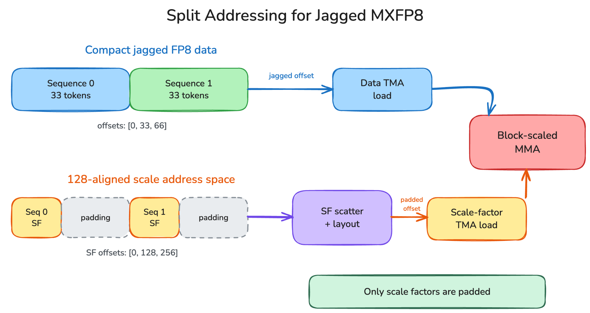
注意力反向包含以下关键运算：
GEMM：
S = K · Qᵀ
dP = V · dOᵀ
dV = Pᵀ · dO
dK = dSᵀ · Q
dQ = dS · K
计算：
P = softmax(S)
dS = dsoftmax(dP, P)
注意在反向里，有几个GEMM是转置的。比如：
dP = V · dOᵀ
dV = Pᵀ · dO
对dP这个MMA，dO的量化要沿D（嵌入维度）做；而对dV这个MMA，量化要沿M（序列维度）做。这跟前向里P·V MMA的情况类似，那里V需要沿M维量化。但在反向里，我们有需要沿两个轴量化的GEMM。这是使用块缩放MMA的一个限制：量化必须沿GEMM的K维进行。
为解决这个问题，我们用方阵 [32,32] 块来量化Q、K和dO，使E4M3载荷对转置不敏感。两个GEMM因此可以复用同一份量化表示，不必各存一份。体积小得多的E8M0缩放因子仍按每个GEMM所需的张量核心缩放布局分别排布和加载。dS也面临类似的转置难题：方阵量化方案产出一份表示，dK和dQ都能消费。
[注：该方案描述的是1-CTA路径。我们目前MX8用的就是1-CTA路径，因为它当前表现更好]
前向有2个GEMM（S和O），配2级Q流水、跨4个累加器；反向有5个GEMM，全都要TMEM空间放累加器和缩放因子。TMEM布局把512列全排满了：
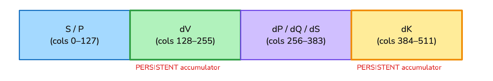
核心约束在于：dK和dV是持久累加器，它们在整个M循环里持续累加，所以对应的TMEM区域在内核整个生命周期内都被占用。这意味着SF只能放在S和dP区域。我们把dP区域用于前2个GEMM（S和dK），把S区域用于后3个GEMM。我们只需要在S GEMM之前额外加一个屏障，这应该不会带来额外开销。TMEM分配方案详见下表：
| 名称 | GEMM的SF | SF的TMEM区域 | 为什么安全？ |
|---|---|---|---|
| 序言 | SFK, SFQ, SFV, SFDO | dK | 序言阶段dK空闲 |
| S (K@Qᵀ) | SFK, SFQ | dP | pipeline_dP_drain.empty.wait保证上一轮dP已被排空；在cluster-one下它复用已有的pipeline_dP屏障。 |
| dK (dSᵀ@Q) | SFDS, SFQ_dK | dP | dS是dK GEMM的输入，已有屏障保证该区域空闲。注意dS是FP8，只占32列，还剩96列可用。 |
| dQ (dS@K) | SFDS_dQ, SFK_dQ | S | pipeline_S_drain.empty.wait保证S被读取之后其TMEM区域才能复用。 |
| dP (V@dOᵀ) | SFV, SFDO | S | 隐式顺序保证 |
| dV (Pᵀ@dO) | SFP, SFDO_dV | S | pipeline_S_P.empty.wait（本来就为P的就绪所需要） |
反向里dS用FP32计算，并被两个GEMM消费：
dK = dSᵀ · Q，dQ = dS · K。
我们对dS的每个32×32块只量化一次。每个warp lane拥有32个值，先算出线程内的最大绝对值；随后Blackwell的redux.sync.max.abs.f32指令把这32个局部最大值在warp内归约，得到整块的AMAX。因为缩放区域是方形的，dS被转置后它依然有效，同一份缩放因子和载荷因此可以同时喂给两个GEMM。
对dS只量化一次，省掉了一次额外的E8M0转换、反缩放乘法、E4M3转换和载荷片段。dK和dQ的MMA仍会把共享的缩放因子拷贝进各自所需的硬件布局。我们发现，[32, 32] 方阵量化在我们的训练负载里数值上可以接受。
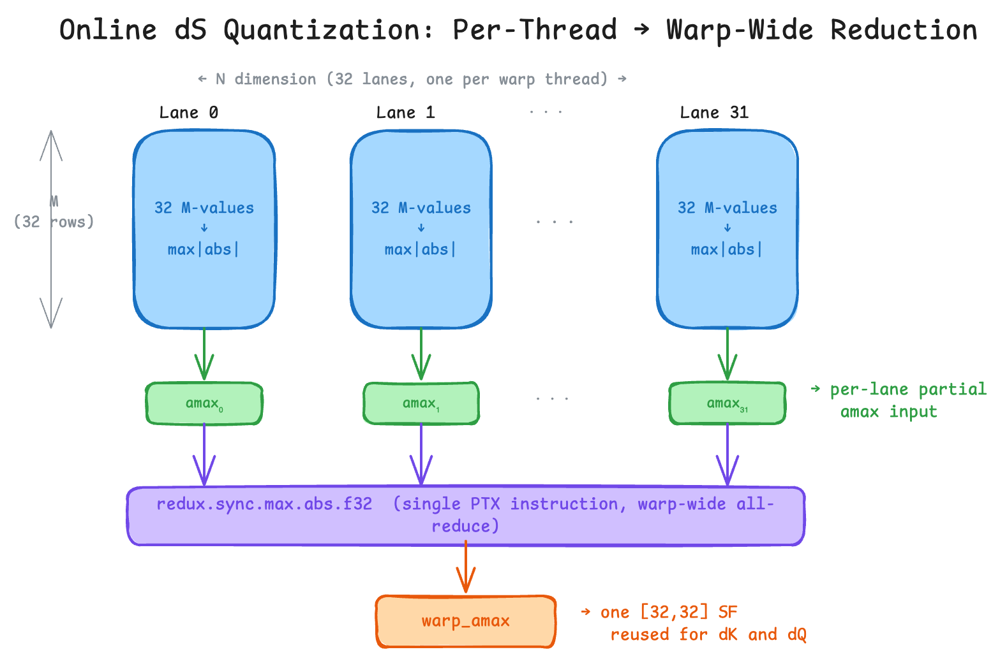
通过消融实验，我们确认dQ归约是关键吞吐瓶颈。因为dQ在每一轮内循环里都要把一个128×128的tile写回GMEM，大幅抬高了全局内存带宽消耗。为缓解这一点，我们评估了BF16和FP16两种dQ归约策略，发现带静态缩放的FP16 dQ性能最优。考虑到生产负载里dQ的数值一直很小，FP16配较大的缩放因子能保持可接受的数值精度。FP32与FP16 dQ归约的详细性能对比，我们在结果一节给出。
核心注意力内核虽然拿到了不错的加速，但量化开销仍是一个关键挑战，序列长度较小时尤其明显。为消除量化开销，我们把MXFP8量化融合进前一个内核的尾声。在我们的形状上，它还通过减少数据读写或计算，让前一个内核在若干形状上也变快了。
反向的另一个挑战是转置量化：我们得对Q、dO和K张量沿两个轴量化。传统的块缩放不是转置不变的。最初我们试过在尾声里融合 [32, 1] 与 [1, 32] 双重量化，发现很慢。现在的方案使用 [32, 32] 方阵量化，和SFDS_dQ类似，这让量化转置不变，只需要量化一次。
前向里RMSNorm的输出会喂给Wq和Wk投影的MXFP8 GEMM。与其把BF16写回GMEM再跑一个单独的量化内核，我们把RMSNorm与 [32,32] MXFP8量化融合进一个CuTe DSL内核。
这个内核采用两阶段持久化设计：每个CTA处理4个8行的tile（合起来32行，正好匹配 [32,32] 的块高）。阶段1计算RMSNorm，把BF16存到SMEM，并把每个K块的AMAX累积进一个运行中的最大值；阶段2在全部32行上归约AMAX，再从SMEM读回BF16、缩放并转成FP8。两阶段拆分是必要的，因为 [32,32] 的AMAX需要在量化前看到全部32行，而每个tile只处理8行。
反向里，我们在现有Quack RMSNorm反向内核上再融合两个操作，且零额外内存开销：(1) 归一化输出x_norm = x × rstd × w的重建（x_hat和权重已经在寄存器里），省掉一个单独的重建内核；(2) 内联的FP8 dV反量化，FA4反向算出的dV每轮用标量SF索引反量化，直接加到dout上。
对投影GEMM（比如Wq、Wk、Wv），我们把MXFP8量化融合进GEMM的尾声。核心想法是：MMA累加器的值从TMEM移到寄存器（FP32）之后，转成FP8的过程完全在寄存器里完成，然后才写回GMEM，BF16中间结果从不落全局内存。
为了拿到加速，需要向量化的128/256位存储和批量FP8转换。在计算受限的形状上，融合的FP8内核比BF16 GEMM更快，因为FP8 MMA的吞吐是2倍。
[32,32] 变体只写一次FP8数据，就从一次warp级AMAX归约（redux.sync.max.abs.f32）里输出两种cuBLAS分块布局的E8M0缩放因子，前向用K块布局，反向用M块布局。
注意力输出梯度被两个收缩维度不同的投影反向GEMM消费。对自注意力来说，(dX = dZ · Wᵀ) 需要沿特征维度取缩放，而 (dW = Xᵀ · dZ) 需要沿token维度取缩放。因此我们把它的1.76 PFLOP/s结果只当作性能数据，而不是通过精度验证的对比，并从上面的图里把它剔除；我们计划在CuDNN的GitHub上开一个issue来查这个问题。PMA路径遵循同样的原则：FA4输出带序列局部 [32,32] 缩放的FP8 dK和dV，我们据此构造出 (dX = dK · W) 用的行布局，以及 (dW = dKᵀ · X) 用的转置布局。
权重梯度GEMM对不规则输入尤其棘手，因为转置让变长的token维度变成了GEMM的K维。我们扩展了下游的Quack GEMM [6]，让它直接从紧凑的不规则存储里读FP8值，同时在一个单独的、补齐过的逻辑K空间里寻址它们的缩放因子。这个内核把每条序列当作独立的K段处理，并对得到的部分权重梯度做归约，从而在不补齐激活张量的前提下，避免量化分组跨越序列边界。最后，紧凑的dX输出直接流进norm反向；在PMA里，FP8 dV的反量化与加法也被融合进那个norm内核，省掉又一个落地的中间结果。
优化广告模型的首要瓶颈，来自它们相对LLM负载更小的张量形状和嵌入维度，这让模型更受带宽限制。传统做法使用独立的量化内核，冗余的全局内存流量带来额外的带宽开销，严重拉低MFU。为应对这些约束，我们采用专门的模块设计策略，针对GEM架构的独特需求，开发了一整套高性能融合内核和定制模块。
这项工作里我们聚焦在交叉注意力模块上，它在Meta的许多推荐模块里都很常见。端到端执行流程如下图所示：
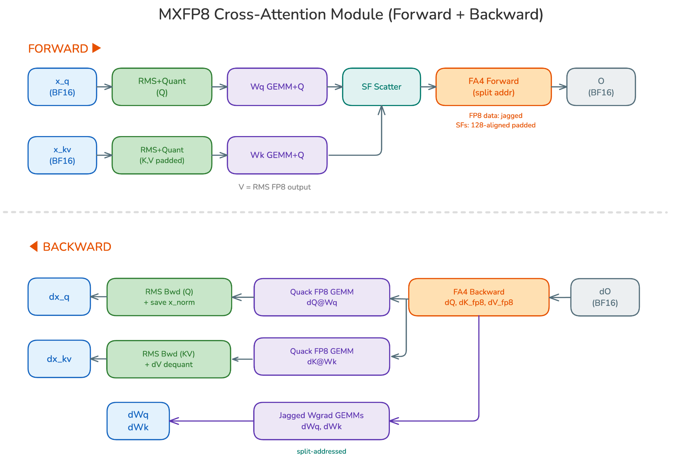
这一节我们在常见LLM形状以及我们内部负载上，比较OSS FA4内核、CuDNN 9.24与我们的FA4分支内核。我们的内部负载形状与FA4论文里用的形状有些不同，具体是：1) 更大的batch size，2) 更少的head，3) 更短的query长度，4) 高度不规则的序列长度分布。
我们用张量核心吞吐（TFLOP/s）以及相对基线实现的加速来报告内核级性能。基准测试在Meta内部的推荐系统GB300 GPU上完成。我们评估了以下实现：
• OSS FA4 BF16：截至2026年8月2日的开源FA4实现快照。
• Internal FA4 BF16：我们的内部FA4实现，增加了持久化执行和改进的变长调度。
• Internal FA4 MX8：我们内部FA4实现的MXFP8扩展。
• cuDNN 9.24：前向和反向的cuDNN BF16基线，凡是报告了MXFP8基线的地方也一并纳入。
LLM形状
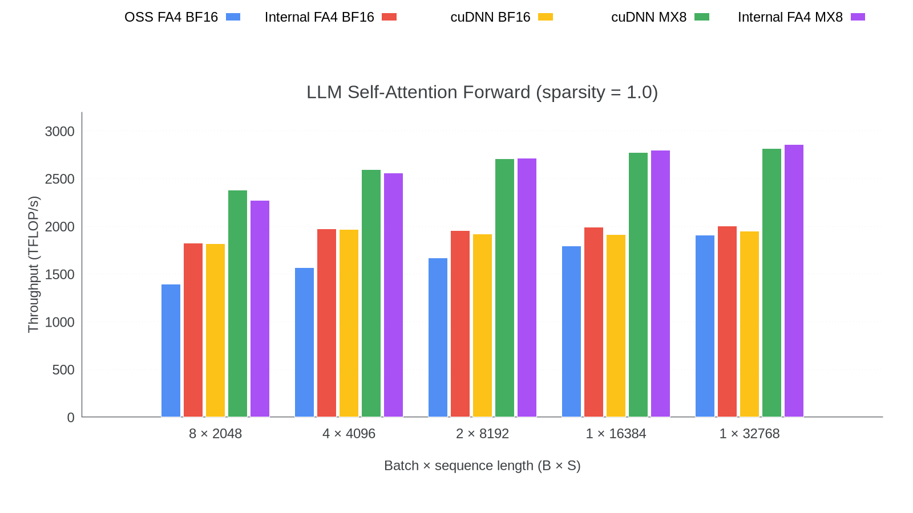
• 前向部分，FA4 MX8达到2.85 PF/s，与cuDNN 9.24 MX8的2.82 PF/s相当，相对2.00 PF/s的FA4 Internal BF16有1.43倍的提升。
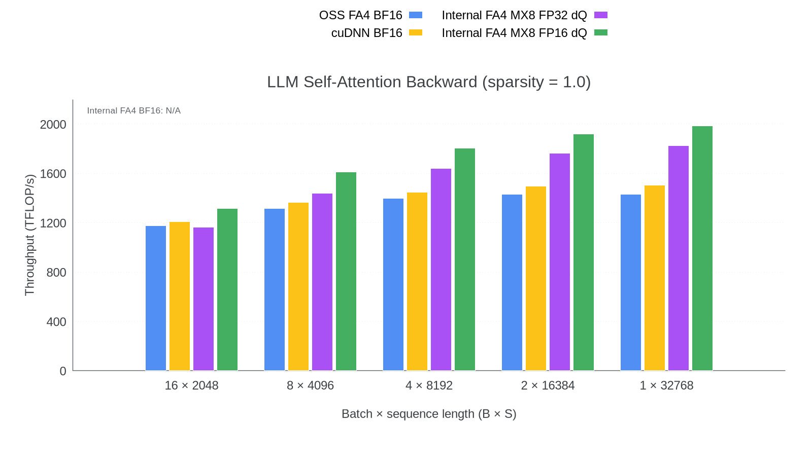
• 反向部分，FA4 MX8在FP32 dQ累加下达到1.82 PF/s，在FP16 dQ累加下达到1.98 PF/s，分别比1.50 PF/s的cuDNN BF16快1.21倍和1.32倍。
• 在cuDNN Frontend 1.26和cuDNN 9.24的测试里，使用非均匀E8M0 V缩放的MXFP8反向，dQ和dK与参考结果对不上；换成均匀V缩放后差异消失。因此我们把它的1.76 PFLOP/s结果只当作性能数据，而不是通过精度验证的对比。这个反向的注意事项不适用于cuDNN的MXFP8前向结果。另一个明显差异是CuDNN返回BF16的dK/dV梯度，而我们返回量化后的梯度。
内部形状
前向结果同时给出不规则K（稀疏度0.5）和均匀K（稀疏度1.0）两种情况。对共享Q的形状，OSS FA4和cuDNN参考使用最接近的、受支持的独立Q执行，并对齐注意力算术；图例里用的是便于阅读的展示名。
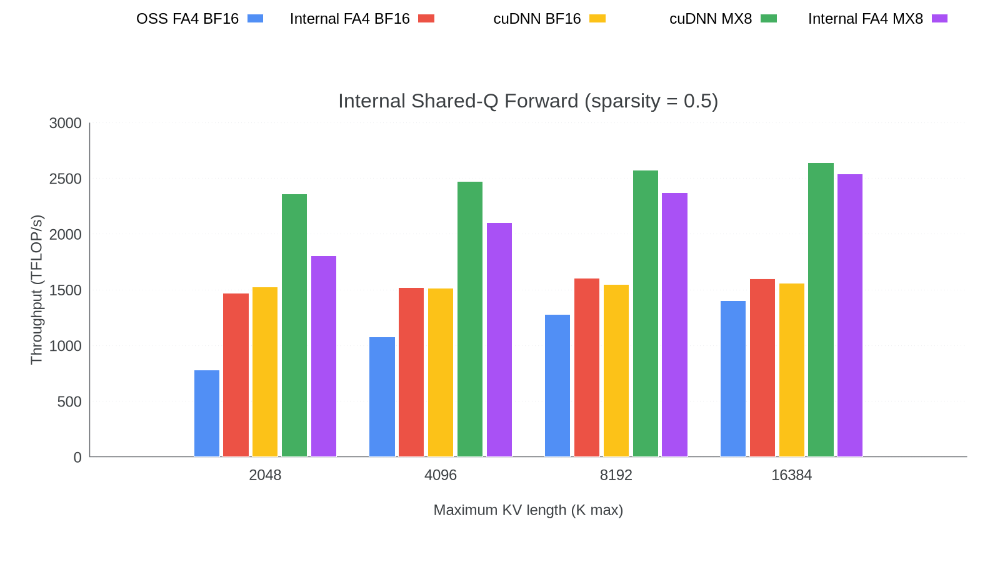
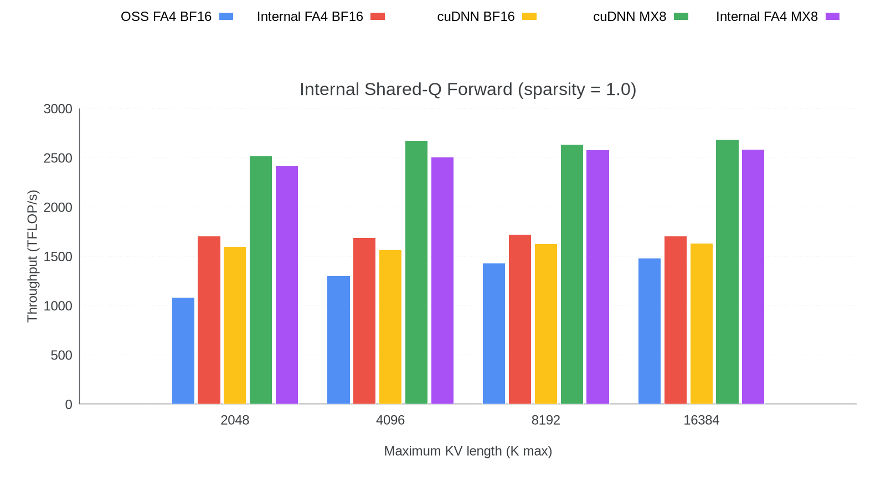
• 在不规则K（稀疏度0.5）、K max = 16384时，FA4 Internal MX8达到2.54 PF/s，比1.60 PF/s的FA4 Internal BF16快1.59倍，与2.64 PF/s的cuDNN MX8相差4% 以内。
• 在均匀K（稀疏度1.0）、K max = 16384时，FA4 Internal MX8达到2.59 PF/s，比1.71 PF/s的FA4 Internal BF16快1.51倍，与2.68 PF/s的cuDNN MX8相差4% 以内。
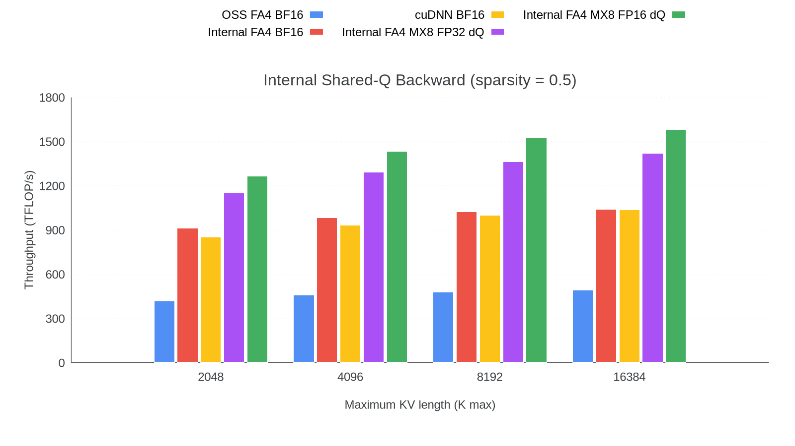
• 反向部分，FA4 Internal MX8在FP32 dQ累加下达到1.42 PF/s，在FP16 dQ累加下达到1.58 PF/s，相对1.04 PF/s的FA4 Internal BF16分别有1.37倍和1.52倍的提升。
• OSS FA4缺少我们在分支里做的一些调度器和小Q优化，这就是它在我们的内部形状上明显更慢的原因。
在B200的模块形状上，把量化融进GEMM尾声，吞吐从分离的GEMM加量化大约0.20 PF/s提升到0.91到0.98 PF/s，加速4.4到4.7倍。下面两张图是实测结果：
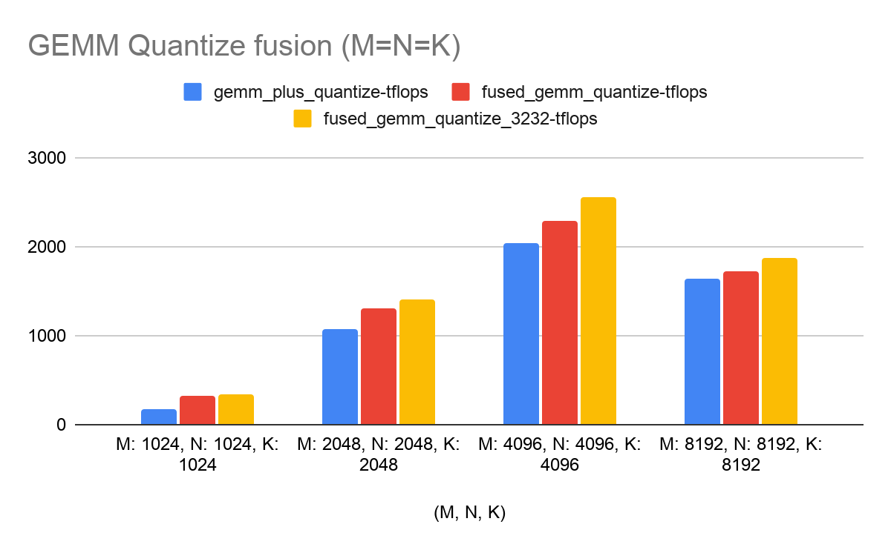
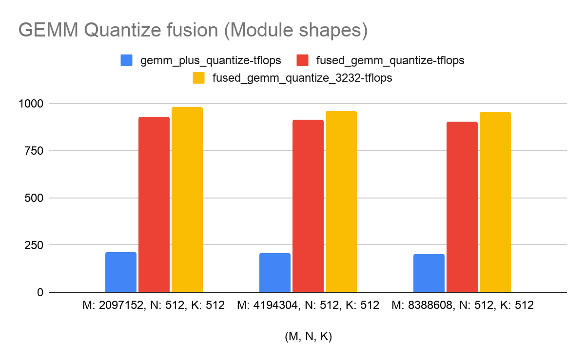
在N=512的B200形状上，融合RMSNorm与MXFP8量化把有效带宽从0.75到0.87 TB/s提升到2.6到4.0 TB/s，最高4.7倍加速。下图是实测结果：
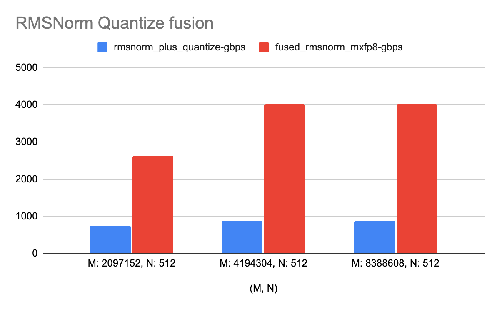
在单张GB300 GPU上测得，B=768，Q=512个种子query，D=384，H=3；数值是PMA模块前向加反向的编译后中位延迟，在200次预热迭代之后测1000次迭代。
| KV token数 | BF16 FA4中位延迟（ms） | MXFP8中位延迟（ms） | 加速比 |
|---|---|---|---|
| 4,096 | 10.327 | 10.281 | 1.00× |
| 8,192 | 17.348 | 14.663 | 1.18× |
| 16,384 | 31.705 | 24.479 | 1.30× |
这里报告的是SQNR（信噪量化比），也就是把「噪声」定义为MXFP8结果与BF16参考之差的那种SNR变体。越高越好：提高10 dB意味着相对信号，误差功率降到十分之一。我们用SQNR，是因为不同张量之间激活和梯度的量级差异很大。
在把这个模块产品化用于GEM训练时，我们发现MXFP8注意力对NE是中性的；要达成数值稳定，用到了受SageAttention3 [7] 和Qiu等人 [8] 启发的技术。
下表给出生产形状合成运行的数据（B=768，总共5,856,019个KV token，最大K=14,980，D=384，H=3，Q=512）：
| 数值项 | FP32 dQ | FP16 dQ, 2^9 |
|---|---|---|
| forward_output | 18.84 | 18.84 |
| event_embs.grad | 26.55 | 26.55 |
| seed_embs grad | 27.68 | 25.65 |
| query_norm.weight grad | 28.02 | 26.02 |
| query_proj.weight grad | 27.69 | 25.66 |
| key_proj.weight grad | 25.15 | 25.15 |
| Strict summary | 23 / 1 / 0 | 23 / 1 / 0 |
Blackwell上的块缩放注意力是一个端到端的系统问题，而不是简单换掉数据类型。我们通过协同设计TMEM分配、流水线调度、P与dS的在线量化，以及更低带宽的dQ归约，把FA4扩展到支持MXFP8的前向和反向；随后把量化融进RMSNorm和GEMM生产者，并通过只重排缩放元数据、不做整张量聚集，让不规则的FP8数据保持紧凑。
这些技术合起来，把Blackwell的块缩放MMA吞吐变成了同时适用于LLM和推荐负载的实用训练栈。我们计划在Ads Model Kernel Library里开源低精度FA4及其配套组件，让这些技术可以被复用和扩展。
参考：https://pytorch.org/blog/low-precision-flash-attention-4-end-to-end-block-scaled-attention-for-blackwell/